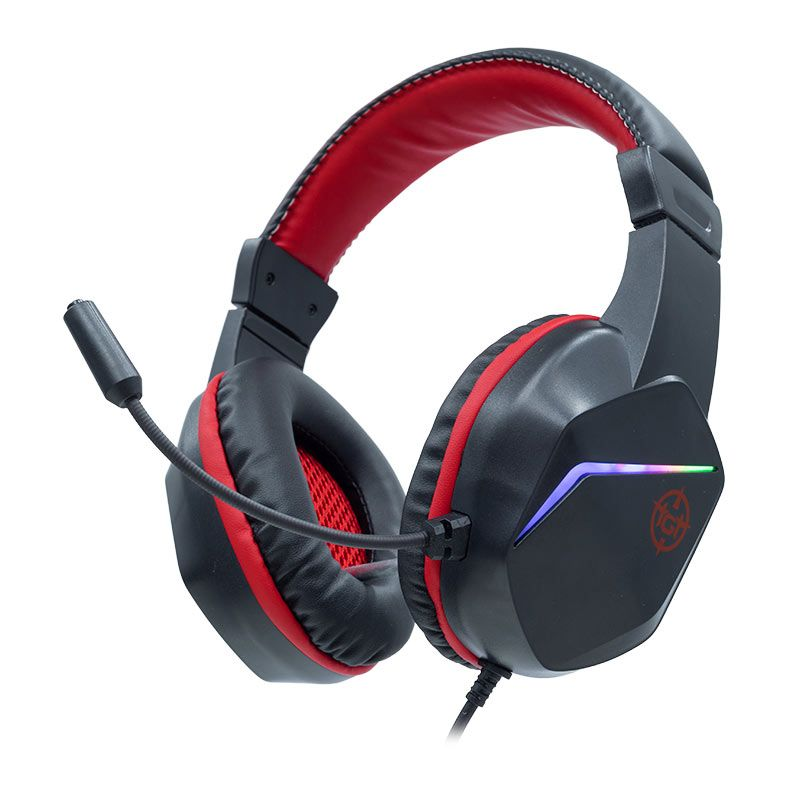

Produtos
Headset Branco Multilaser
Headset - Com microfone - Com fio - Branco - Computador - Videogame

Headset TGT Dive
TGT Diver - Rainbow - Drivers 40MM - Preto - TGT-DVR-RGB01
Headset Razer Blackshark
Headset Gamer Razer BlackShark V2 X - Surround 7.1 - Drivers 50mm - P3 - Verde
Headset Over-Ear
Inclui microfone - Som superior e ilimitado - Confortávels e práticos - Tamanho do alto-falante: 50mm
Headset Sennheiser HE 1
Drivers Eletrostáticos - Película ultrafina para gerar o áudio - Frequência entre 8 Hz e 100 kHz
Headset Gamer Havit
omprimento do cabo: 2,2 m Diâmetro do condutor: 50mm Resposta de Frequência: 20hz-20khz Tipo de plugue: 2 - 3,5 mm + USB

Headset Redragon Hero
Porta de áudio: Jack de 3,5 mm - Tecnologia de conexão: Com fio - Número do modelo: H530-R

Headset Razer Kraken Ultimate
Resposta de freqüência: 20 Hz - 20 kHz - Resposta de frequência: 100 Hz - 10 kHz - Aumentar e diminuir o volume